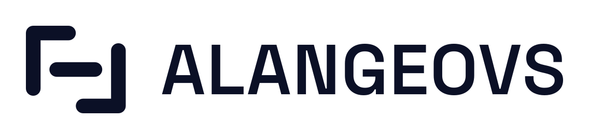

PRESENTACIÓN ARTÍSTICA / NOVIEMBRE 2026


El ritmo de estar vivo.
DJ & productor / Ciudad de México
Propuesta artística
AlanGeovs conecta house, melodic house, trance, melodic trance, tech house y minimal a través del groove, la melodía y la progresión. Explora la mezcla desde 2024 y desde 2025 se forma en Sound Space Academy.
Como practicante de running y calistenia, busca colaborar con comunidades deportivas para acompañar la preparación, las activaciones y la celebración de cada llegada.
Formatos propuestos
- Recepción y calentamiento / 30-45 min. House, minimal y melodías para preparar el ambiente.
- Fitness y activación / 30-60 min. Tech house y progresión para retos o activaciones.
- Llegada y convivencia / 30-45 min. House y melodic house para celebrar el esfuerzo.
- Previa deportiva / fan zone. Bloques por acordar con producción; medio tiempo a consultar.
Ficha técnica inicial
Equipo propio: DDJ-FLX4, Rekordbox en MacBook Pro y audífonos. Formato DJ set. Salida máster RCA estéreo; la interfaz al PA y las tiradas balanceadas se acuerdan con el técnico.
Organizador: PA y operación adecuados al aforo y espacio, mesa estable, energía segura y protección de sol o lluvia. Llegada sugerida 60 min antes y prueba de 20-30 min, por confirmar.
Operación: coordinación de pausas con locución, salidas, premiación y avisos; bloques de previa o medio tiempo sujetos al guion y autorización de producción.
Colaboración
Abierto a colaboraciones piloto como voluntario, sin honorarios de DJ; apoyo de traslado opcional. CDMX y alrededores. Fecha, duración y condiciones técnicas se acuerdan antes de confirmar.
Contacto
Alan G. Velázquez Valera / AlanGeovs
alangeovs@gmail.com
soundcloud.com/alangeovs